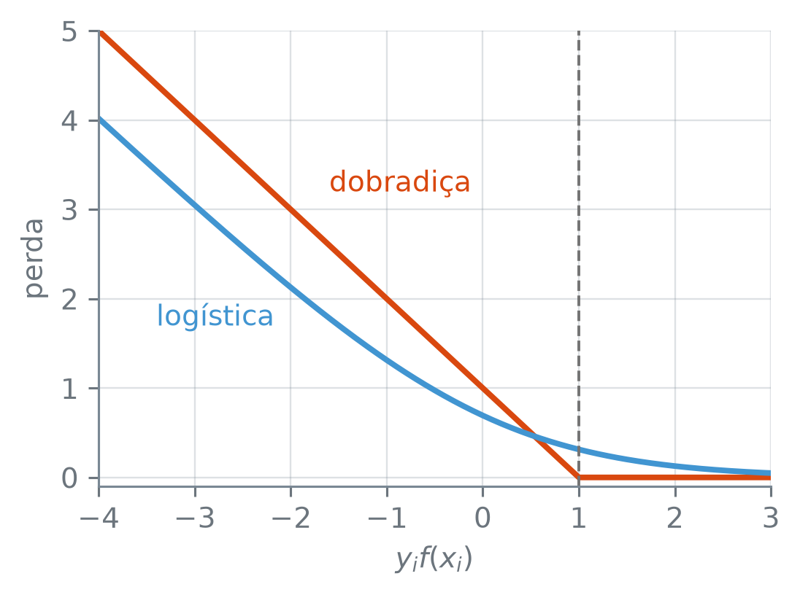

def numero_br(valor, casas=2):
texto = f"{valor:,.{casas}f}"
texto = texto.replace(",", "_").replace(".", ",").replace("_", ".")
return texto.replace("-", "−")O Classificador de Vetores de Suporte
Nota
Esta seção corresponde às seções 9.2, 9.5 e 9.6.1 de James et al. (2023).
Quando as duas nuvens de pontos se misturam, nenhuma reta deixa todas as observações de uma classe de um lado e todas as da outra do outro. E, mesmo quando uma reta separa, ela pode depender de poucos pontos: um ponto novo perto da fronteira basta para girá-la. Vale aceitar alguns pontos de treino do lado errado em troca de uma fronteira que não dependa tanto de poucos deles? E quantos aceitar?
A função numero_br escreve os números com a pontuação brasileira:
Os pontos são os mesmos 40 sorteios da seção 16.1, com a classe \(1\) deslocada de 1 nas duas coordenadas, o que mistura as nuvens. Depois deles, o mesmo gerador sorteia 10.000 pontos de teste, 5.000 de cada classe, com o mesmo deslocamento (o _ em 10_000 só separa os milhares para quem lê):
import numpy as np
rng = np.random.default_rng(16)
X = rng.normal(size=(40, 2))
y = np.repeat([-1, 1], 20)
X_mis = X.copy()
X_mis[y == 1] += 1
X_teste = rng.normal(size=(10_000, 2))
y_teste = np.repeat([-1, 1], 5_000)
X_teste[y_teste == 1] += 1
print("pontos de treino:", len(X_mis))
print("pontos de teste:", numero_br(len(X_teste), 0))pontos de treino: 40
pontos de teste: 10.000Uma margem que aceita violações
O classificador de margem máxima pede que todo ponto de treino fique do lado certo da margem. Afrouxar essa exigência dá o classificador de vetores de suporte: cada ponto ganha uma variável de folga, que mede quanto ele invade a margem, e a soma dessas folgas tem um teto.
O classificador de vetores de suporte escolhe \(\beta_0, \dots, \beta_p\), as folgas \(\varepsilon_1, \dots, \varepsilon_n\) e a margem \(M\) que resolvem
\[ \begin{aligned} &\text{maximizar}\ M \\ &\text{sujeito a}\ \sum_{j=1}^{p} \beta_j^2 = 1, \\ &y_i\, f(x_i) \ge M(1 - \varepsilon_i), \\ &\varepsilon_i \ge 0,\ \ \sum_{i=1}^{n} \varepsilon_i \le C. \end{aligned} \]
A folga \(\varepsilon_i\) diz onde o ponto \(i\) ficou:
- \(\varepsilon_i = 0\): do lado certo da margem, sobre a borda ou além dela;
- \(0 < \varepsilon_i < 1\): dentro da margem, mas do lado certo do hiperplano;
- \(\varepsilon_i = 1\): sobre o hiperplano;
- \(\varepsilon_i > 1\): do lado errado do hiperplano, um erro de treino.
O número \(C \ge 0\) é um orçamento: o total de folga que as \(n\) observações podem gastar. Cada ponto do lado errado do hiperplano gasta mais de 1, então no máximo \(C\) pontos ficam do lado errado. Com \(C = 0\), nenhuma folga é permitida e o problema volta a ser o da margem máxima.
Na escala em que o SVC guarda os coeficientes, a da seção 16.1, a borda da margem é \(y_i f(x_i) = 1\) e a restrição com \(M\) vira \(y_i f(x_i) \ge 1 - \varepsilon_i\). A folga de cada ponto é então \(\varepsilon_i = \max(0,\ 1 - y_i f(x_i))\): zero para quem está sobre a borda ou além dela, e \(1 - y_i f(x_i)\) para os outros.
AvisoO
C do SVC vai no sentido oposto
O SVC tem um argumento chamado C, mas ele não é o orçamento \(C\): vai no sentido contrário. Um C pequeno no SVC dá uma margem larga, com muita folga gasta; um C grande dá uma margem estreita, com pouca folga. Daqui em diante, C em fonte de código é sempre o argumento do SVC, e \(C\), em itálico, o orçamento.
O primeiro ajuste usa o SVC com C=1, o valor padrão do argumento. Aqui as duas coordenadas estão na mesma escala; com preditores em unidades diferentes, a margem e as folgas dependeriam da unidade, e o StandardScaler entra antes do SVC num Pipeline, ajustado só no treino (seção 10.6). Primeiro, a folga de um ponto só, o ponto 26, da classe \(1\):
from sklearn.svm import SVC
modelo = SVC(kernel="linear", C=1)
modelo.fit(X_mis, y)
print("classes_[1]:", modelo.classes_[1])
f_26 = modelo.decision_function(X_mis[[26]])[0]
yf_26 = y[26] * f_26
eps_26 = max(0, 1 - yf_26)
print("classe do ponto 26:", y[26])
print("f(x):", numero_br(f_26))
print("y·f(x):", numero_br(yf_26))
print("folga, max(0, 1 − y·f(x)):", numero_br(eps_26))classes_[1]: 1
classe do ponto 26: 1
f(x): −1,30
y·f(x): −1,30
folga, max(0, 1 − y·f(x)): 2,30O ponto 26 tem \(y_i f(x_i) = -1{,}30\): está do lado errado do hiperplano, e a folga dele, \(1 - (-1{,}30) = 2{,}30\), passa de 1. A mesma conta, para os 40 pontos de uma vez:
yf = y * modelo.decision_function(X_mis)
eps = np.maximum(0, 1 - yf)
print("folga do ponto 26:", numero_br(eps[26]))
print("maior folga:", numero_br(eps.max()))folga do ponto 26: 2,30
maior folga: 2,30max(0, 1 - yf_26)— o maior dos dois números.np.maximum(0, 1 - yf)faz o mesmo elemento a elemento: compara 0 com cada \(1 - y_i f(x_i)\) e fica com o maior, a folga de cada ponto.
Em termos de \(y_i f(x_i)\), as quatro faixas da folga são \(y_i f(x_i) \ge 1\), entre 0 e 1, igual a 0 e menor que 0. O SVC resolve o problema só até uma tolerância de 0,001, o padrão do argumento tol, e por isso as duas faixas de igualdade, sobre a borda (\(y_i f(x_i)\) perto de 1) e sobre o hiperplano (perto de 0), são testadas primeiro, com essa tolerância. Para o ponto 26, faixa a faixa:
tol = 1e-3
if abs(yf_26 - 1) <= tol:
faixa_26 = "sobre a borda"
elif abs(yf_26) <= tol:
faixa_26 = "no hiperplano"
elif yf_26 > 1:
faixa_26 = "além"
elif yf_26 > 0:
faixa_26 = "dentro"
else:
faixa_26 = "lado errado"
print("y·f(x) do ponto 26:", numero_br(yf_26))
print("faixa do ponto 26:", faixa_26)y·f(x) do ponto 26: −1,30
faixa do ponto 26: lado erradoA ordem dos testes decide: um ponto sobre a borda tem \(y_i f(x_i) > 0\) também, mas cai em “sobre a borda”, que é testada antes; e o teste yf_26 > 0 só chega a quem não passou de 1. A mesma sequência, para os 40 pontos de uma vez, e uma tabela com os pontos de cada faixa e os erros de treino de cada uma:
import pandas as pd
sobre = np.isclose(yf, 1, atol=tol)
no_hip = np.isclose(yf, 0, atol=tol)
nomes = ["sobre a borda", "no hiperplano", "além", "dentro", "lado errado"]
faixa = np.select([sobre, no_hip, yf > 1, yf > 0], nomes[:4], nomes[4])
print("faixa do ponto 26:", faixa[26])
dentro = faixa == "dentro"
errado = faixa == "lado errado"
erro_treino = modelo.predict(X_mis) != y
contagem = []
for nome in nomes:
na_faixa = faixa == nome
contagem.append({
"faixa": nome,
"pontos": na_faixa.sum(),
"erros de treino": (na_faixa & erro_treino).sum(),
})
pd.DataFrame(contagem).style.hide()faixa do ponto 26: lado errado| faixa | pontos | erros de treino |
|---|---|---|
| sobre a borda | 3 | 0 |
| no hiperplano | 0 | 0 |
| além | 18 | 0 |
| dentro | 10 | 0 |
| lado errado | 9 | 9 |
np.isclose(yf, 1, atol=tol)—Trueondeyfdifere de 1 em no máximotol, 0,001.np.select(condicoes, nomes, padrao)— oif/elifacima, ponto a ponto: para cada ponto, o nome da primeira condição da lista que éTrue, epadraoquando nenhuma é, aqui quem tem \(y_i f(x_i)\) negativo.nomes[:4]— os quatro primeiros nomes da lista;nomes[4], o quinto, é o padrão.faixa == "dentro"—Trueonde a faixa do ponto é"dentro".a & b—Trueonde os dois sãoTrue: os pontos da faixa que o classificador erra.
Na figura, a reta contínua é o hiperplano e as tracejadas são as bordas da margem. Os pontos sem anel estão além da tracejada do seu lado. O anel roxo marca quem está sobre a tracejada ou entre ela e a reta contínua; o verde, quem passou da reta contínua para a região da outra classe:
import matplotlib.pyplot as plt
def classes(ax, pts, y):
a = pts[y == -1]
b = pts[y == 1]
ax.scatter(a[:, 0], a[:, 1], color="C0", s=18, label="classe −1")
ax.scatter(b[:, 0], b[:, 1], color="C1", s=24, marker="^", label="classe 1")
ax.set_aspect("equal")
def regioes(ax, modelo):
g = np.linspace(-3, 4, 141)
g1, g2 = np.meshgrid(g, g)
malha = np.column_stack([g1.ravel(), g2.ravel()])
z = modelo.decision_function(malha).reshape(g1.shape)
lim = np.abs(z).max() + 1
ax.contourf(g1, g2, z, levels=[-lim, 0, lim], colors=["C0", "C1"], alpha=0.2)
ax.contour(g1, g2, z, levels=[-1, 0, 1], colors="0.45", linewidths=1.5,
linestyles=["--", "-", "--"])
def anel(ax, pts, cor, rotulo, tam=90, lw=1.5):
ax.scatter(pts[:, 0], pts[:, 1], s=tam, facecolors="none", edgecolors=cor,
linewidths=lw, label=rotulo)
fig, ax = plt.subplots(figsize=(3.8, 4.8), layout="constrained")
regioes(ax, modelo)
classes(ax, X_mis, y)
na_margem = sobre | dentro
anel(ax, X_mis[na_margem], "C3", "sobre a borda ou dentro")
anel(ax, X_mis[errado], "C2", "lado errado")
ax.set_xlim(-2.5, 3.5)
ax.set_ylim(-2.5, 3.5)
ax.set_xticks([-2, 0, 2])
ax.set_yticks([-2, 0, 2])
ax.set_xlabel("$X_1$")
ax.set_ylabel("$X_2$")
fig.legend(ncols=2, loc="outside lower center")
plt.show()![Gráfico de dispersão com eixos X1 e X2 de −2,5 a 3,5, com marcas em −2, 0 e 2, fundo dividido por uma reta cinza que desce da esquerda para a direita: azul claro embaixo à esquerda, laranja claro em cima à direita. Duas retas tracejadas paralelas formam uma faixa larga em volta da reta. Círculos azuis e triângulos laranja se misturam perto da faixa; muitos pontos dentro dela têm anel roxo, e alguns círculos azuis na região laranja e triângulos laranja na região azul têm anel verde. A legenda fica embaixo.](02-o-classificador-de-vetores-de-suporte_files/figure-html/fig-folgas-output-1.png)
C=1 nos 40 pontos misturados. A reta cinza contínua é o hiperplano, e as tracejadas, as bordas da margem. Anéis roxos: os pontos sobre a borda (\(\varepsilon_i = 0\)) ou dentro da margem (\(0 < \varepsilon_i < 1\)). Anéis verdes: os 9 pontos do lado errado do hiperplano, com \(\varepsilon_i > 1\), os erros de treino.
a | b—Trueonde ao menos um dos dois éTrue:na_margemmarca os pontos sobre a borda ou dentro da margem.
classes desenha os pontos das duas classes; regioes pinta o lado de cada classe e traça o hiperplano e as bordas da margem; anel desenha anéis vazios numa cor e num tamanho escolhidos.
Dos 40 pontos, 18 ficam além da margem, com folga zero, e 3 sobre a borda, com folga zero a menos da tolerância; 10 invadem a margem sem cruzar o hiperplano; nenhum fica sobre o hiperplano; e 9 estão do lado errado dele, com \(\varepsilon_i > 1\). São os 9 erros de treino: na tabela, a coluna dos erros só tem valor na linha do lado errado, e lá ele é 9, os 9 pontos da faixa. A faixa entre as tracejadas, vazia na margem máxima, agora tem pontos dentro, e os de anel verde estão na região da outra classe.
Na margem máxima, os vetores de suporte eram os pontos sobre a borda. E agora, quais pontos definem o hiperplano? Pela figura, quais você apontaria? O código conta os vetores de suporte que o SVC devolve em cada faixa:
sv = modelo.support_
print("vetores de suporte:", len(sv))
for classe, quantos in zip(modelo.classes_, modelo.n_support_):
print(f"vetores de suporte da classe {numero_br(classe, 0)}:", quantos)
e_vs = np.isin(np.arange(40), sv)
linhas = []
for nome in nomes:
na_faixa = faixa == nome
linhas.append({
"faixa": nome,
"pontos": na_faixa.sum(),
"vetores de suporte": (na_faixa & e_vs).sum(),
})
pd.DataFrame(linhas).style.hide()vetores de suporte: 22
vetores de suporte da classe −1: 11
vetores de suporte da classe 1: 11| faixa | pontos | vetores de suporte |
|---|---|---|
| sobre a borda | 3 | 3 |
| no hiperplano | 0 | 0 |
| além | 18 | 0 |
| dentro | 10 | 10 |
| lado errado | 9 | 9 |
np.isin(np.arange(40), sv)—Truenas posições de 0 a 39 que estão emsv, a lista dos vetores de suporte.
Nas faixas com anel, as duas colunas são iguais: os 22 vetores de suporte, 11 de cada classe, são exatamente os \(3 + 10 + 9\) pontos que estão sobre a borda, dentro da margem ou do lado errado do hiperplano, e nenhum dos 18 pontos além da margem é vetor de suporte. Todo ponto com folga positiva é vetor de suporte.
O que o C do SVC faz
O C do SVC muda a margem, os vetores de suporte e a soma das folgas, isto é, quanto do orçamento \(C\) a solução gastou. Primeiro, um valor só, C = 0,01, com cada medida por extenso:
m = SVC(kernel="linear", C=0.01)
m.fit(X_mis, y)
yf_c = y * m.decision_function(X_mis)
folgas_c = np.maximum(0, 1 - yf_c)
margem_c = 1 / np.linalg.norm(m.coef_[0])
print("C do SVC:", numero_br(0.01))
print("margem, 1 / norma de coef_:", numero_br(margem_c))
print("vetores de suporte:", len(m.support_))
print("soma das folgas:", numero_br(folgas_c.sum()))C do SVC: 0,01
margem, 1 / norma de coef_: 3,14
vetores de suporte: 40
soma das folgas: 29,87A mesma conta para sete valores de C, de 0,01 a 10, e mais um, 100, dez vezes o último, uma linha por valor. Antes de ler a tabela, um palpite: quando o C do SVC cresce, a margem alarga ou estreita? E os vetores de suporte, aumentam ou diminuem?
grade = [0.01, 0.03, 0.1, 0.3, 1, 3, 10]
linhas = []
for c in grade + [100]:
m = SVC(kernel="linear", C=c)
m.fit(X_mis, y)
yf_c = y * m.decision_function(X_mis)
folgas_c = np.maximum(0, 1 - yf_c)
linhas.append({
"c_svc": c,
"margem": 1 / np.linalg.norm(m.coef_[0]),
"n_vs": len(m.support_),
"soma_folgas": folgas_c.sum(),
})
tabela = pd.DataFrame(linhas)
tabela.style.format(
{"c_svc": "{:g}", "margem": "{:.2f}", "soma_folgas": "{:.2f}"}, decimal=","
).hide()| c_svc | margem | n_vs | soma_folgas |
|---|---|---|---|
| 0,01 | 3,14 | 40 | 29,87 |
| 0,03 | 1,86 | 34 | 24,40 |
| 0,1 | 1,18 | 29 | 20,77 |
| 0,3 | 0,87 | 25 | 19,02 |
| 1 | 0,76 | 22 | 18,55 |
| 3 | 0,72 | 21 | 18,46 |
| 10 | 0,72 | 21 | 18,46 |
| 100 | 0,72 | 21 | 18,46 |
grade + [100]— a listagradecom o 100 no fim;gradecontinua com os sete valores.- Na tabela,
c_svcé oCdoSVC,margemé \(M\),n_vsé o número de vetores de suporte, esoma_folgasé \(\sum_i \varepsilon_i\). No formato,"{:g}"escreve o número sem zeros sobrando.
Quando o C do SVC cresce de 0,01 a 10, a margem estreita, de 3,14 para 0,72, os vetores de suporte caem de 40 para 21 e a soma das folgas cai de 29,87 para 18,46. Nenhuma das três colunas cresce de uma linha para a seguinte, e a soma das folgas mostra o sentido invertido do aviso: o C do SVC cresce, e o orçamento que a solução gasta encolhe.
Nas três últimas linhas, C = 3, 10 e 100, a margem, os vetores de suporte e a soma das folgas coincidem, e de 1 para 3 a solução ainda muda: os vetores de suporte passam de 22 para 21. Nestes 40 pontos, nos valores medidos, a partir de C = 3 apertar o orçamento não muda mais a solução. Isso é destes dados; em outros, o ponto em que a solução para de mudar é outro.
Quatro valores de C da grade, um por painel:
fig, eixos = plt.subplots(2, 2, figsize=(7, 7), sharex=True, sharey=True,
layout="constrained")
for c, ax in zip([0.03, 0.1, 0.3, 1], eixos.ravel()):
m = SVC(kernel="linear", C=c)
m.fit(X_mis, y)
regioes(ax, m)
classes(ax, X_mis, y)
anel(ax, m.support_vectors_, "C3", None, tam=80, lw=1.5)
ax.set_xlim(-2.5, 3.5)
ax.set_ylim(-2.5, 3.5)
ax.set_xticks([-2, 0, 2])
ax.set_yticks([-2, 0, 2])
rotulo = f"{c:g}".replace(".", ",")
ax.set_title(f"C = {rotulo} · VS = {len(m.support_)}")
fig.supxlabel("$X_1$")
fig.supylabel("$X_2$")
plt.show()![Quatro painéis em grade de dois por dois, com os mesmos círculos azuis e triângulos laranja misturados, eixos X1 e X2 de −2,5 a 3,5, com marcas em −2, 0 e 2. Em cada um, uma reta cinza desce da esquerda para a direita entre duas retas tracejadas paralelas. No painel de cima à esquerda, C = 0,03, as tracejadas ficam longe da reta, quase nos cantos, e 34 pontos têm anel roxo; no de cima à direita, C = 0,1, a faixa é um pouco mais estreita, com 29 anéis; embaixo à esquerda, C = 0,3, mais estreita, com 25; embaixo à direita, C = 1, a mais estreita, com 22.](02-o-classificador-de-vetores-de-suporte_files/figure-html/fig-quatro-c-output-1.png)
C do SVC, que cresce da esquerda para a direita e de cima para baixo. A reta cinza contínua é o hiperplano, e as tracejadas, as bordas da margem; os anéis roxos marcam os vetores de suporte. No título de cada painel, o C do SVC e VS, o número de vetores de suporte. Com C maior, a margem estreita e sobram menos vetores de suporte.
plt.subplots(2, 2, sharex=True, sharey=True)— quatro gráficos em duas linhas e duas colunas, com os mesmos limites de eixo;eixos.ravel()os põe numa fila, na ordem de leitura.ax.set_title(texto)— o título do painel;f"{c:g}"escreve o número sem zeros sobrando, e.replace(".", ",")troca o ponto pela vírgula.fig.supxlabelefig.supylabel— um rótulo só para os eixos de todos os painéis.
A largura da margem regula o equilíbrio entre viés e variância (seção 7.6). Com a margem larga, de C pequeno no SVC, muitos pontos a violam: todos eles ajudam a decidir o hiperplano, e um ponto a mais ou a menos pesa pouco. É um classificador de variância baixa, que pode ter viés alto. Com a margem estreita, de C grande, menos pontos decidem a fronteira, e o classificador se ajusta mais aos dados de treino.
Por que o sentido é o oposto
O sentido invertido sai de uma outra forma do mesmo problema, com o formato que a regressão ridge (seção 11.3) já tinha: uma perda, que mede quanto o modelo erra no treino, mais uma penalidade, que encolhe os coeficientes. Nela, o classificador de vetores de suporte escolhe \(\beta_0, \dots, \beta_p\) sem a restrição \(\sum_j \beta_j^2 = 1\) e sem \(M\):
\[ \begin{aligned} &\underset{\beta_0, \dots, \beta_p}{\text{minimizar}} \\ &\sum_{i=1}^{n} \max[0,\ 1 - y_i f(x_i)] \\ &+ \lambda \sum_{j=1}^{p} \beta_j^2. \end{aligned} \]
A perda é a soma das folgas, e tem nome: perda dobradiça (hinge loss), pelo formato do gráfico de \(\max[0,\ 1 - y_i f(x_i)]\), que o fim da seção desenha. A penalidade é a da ridge. Com \(\lambda\) grande, encolher os coeficientes vale mais que reduzir as folgas: os coeficientes saem pequenos, a margem \(1/\lVert\beta\rVert\) sai larga, e a soma das folgas cresce. O SVC minimiza
\[ \begin{aligned} &\tfrac{1}{2} \sum_{j=1}^{p} \beta_j^2 \\ &+ \texttt{C} \sum_{i=1}^{n} \max[0,\ 1 - y_i f(x_i)]. \end{aligned} \]
Dividir tudo por C não muda onde fica o mínimo, e dá a forma anterior com \(\lambda = 1/(2\,\texttt{C})\): o C do SVC está no denominador. Com C=0.1, por exemplo, o \(\lambda\) correspondente é \(1/(2 \cdot 0{,}1) = 5\).
Dá para conferir a conta. Se ela está certa, nenhuma combinação de coeficientes perto da solução do SVC dá um valor menor na forma com \(\lambda = 5\). Para contraste, a mesma conferência vale para \(\lambda = 10\), o valor que sairia esquecendo o \(\tfrac12\). O scikit-learn não calcula o valor da forma com \(\lambda\), e a conta sai à mão. m.intercept_[0] e m.coef_[0] estão na escala do SVC, sem dividir pela norma, que é a escala em que as duas formas acima estão escritas. Primeiro, o valor na própria solução do SVC, com \(\lambda = 5\):
m = SVC(kernel="linear", C=0.1)
m.fit(X_mis, y)
b0 = m.intercept_[0]
b = m.coef_[0]
f = b0 + X_mis @ b
perda = np.maximum(0, 1 - y * f).sum()
penalidade = 5 * (b**2).sum()
print("perda dobradiça, a soma das folgas:", numero_br(perda, 4))
print("penalidade, 5 · (β1² + β2²):", numero_br(penalidade, 4))
print("objetivo com λ = 5:", numero_br(perda + penalidade, 4))perda dobradiça, a soma das folgas: 20,7708
penalidade, 5 · (β1² + β2²): 3,6028
objetivo com λ = 5: 24,3736A mesma conta vira uma função, objetivo, para valer em outros coeficientes e outros \(\lambda\). Andando 0,05 para cada lado em cada um dos três coeficientes, um de cada vez, o objetivo nos seis vizinhos, ao lado do da solução:
def objetivo(b0, b, lam):
f = b0 + X_mis @ b
folga = np.maximum(0, 1 - y * f)
return folga.sum() + lam * (b**2).sum()
passos = {
"solução do SVC": (0, 0, 0),
"β0 + 0,05": (0.05, 0, 0),
"β0 − 0,05": (-0.05, 0, 0),
"β1 + 0,05": (0, 0.05, 0),
"β1 − 0,05": (0, -0.05, 0),
"β2 + 0,05": (0, 0, 0.05),
"β2 − 0,05": (0, 0, -0.05),
}
linhas = []
for nome, (d0, d1, d2) in passos.items():
linhas.append({
"coeficientes": nome,
"λ = 5": objetivo(b0 + d0, b + np.array([d1, d2]), 5),
"λ = 10": objetivo(b0 + d0, b + np.array([d1, d2]), 10),
})
vizinhos = pd.DataFrame(linhas)
vizinhos.style.format({"λ = 5": "{:.4f}", "λ = 10": "{:.4f}"}, decimal=",").hide()| coeficientes | λ = 5 | λ = 10 |
|---|---|---|
| solução do SVC | 24,3736 | 27,9764 |
| β0 + 0,05 | 24,4231 | 28,0259 |
| β0 − 0,05 | 24,4731 | 28,0759 |
| β1 + 0,05 | 24,5187 | 28,4935 |
| β1 − 0,05 | 24,4254 | 27,6812 |
| β2 + 0,05 | 24,4232 | 28,2641 |
| β2 − 0,05 | 24,5982 | 27,9878 |
passos.items()— os pares de chave e valor do dicionário; cada valor é um trio de deslocamentos, e(d0, d1, d2)o separa em três nomes.
Na coluna de \(\lambda = 5\), todos os seis vizinhos ficam acima de 24,3736, o valor na solução do SVC. Na de \(\lambda = 10\), o vizinho \(\beta_1 - 0{,}05\) já fica abaixo da solução: 27,6812, contra 27,9764. Com \(\lambda = 10\), a solução do SVC não é o mínimo.
Seis direções são poucas. O código mexe ao acaso nos três coeficientes ao mesmo tempo, 1.000 vezes, e conta quantas dessas variações dão um valor menor que o da solução:
viz = np.random.default_rng(160)
d = viz.normal(scale=0.05, size=(1000, 3))
for lam in [5, 10]:
base = objetivo(b0, b, lam)
menores = 0
for e in d:
if objetivo(b0 + e[0], b + e[1:], lam) < base:
menores += 1
print(f"λ = {lam}: objetivo na solução do SVC:", numero_br(base, 4),
"· vizinhos menores:", menores, "de", numero_br(len(d), 0))λ = 5: objetivo na solução do SVC: 24,3736 · vizinhos menores: 0 de 1.000
λ = 10: objetivo na solução do SVC: 27,9764 · vizinhos menores: 345 de 1.000viz.normal(scale=0.05, size=(1000, 3))— sorteios da normal com desvio padrão 0,05 (scale), de um gerador com semente própria, 160, diferente da dos dados. Cada linhaemexe no intercepto,e[0], e nos dois coeficientes,e[1:].
Com \(\lambda = 5\), nenhum dos 1.000 vizinhos fica abaixo da solução do SVC; com \(\lambda = 10\), 345 ficam. A correspondência completa, lida nos dois sentidos:
Nota
Um C grande no SVC é um \(\lambda = 1/(2\,\texttt{C})\) pequeno, que é um orçamento \(C\) pequeno.
| orçamento \(C\) | C do SVC |
|
|---|---|---|
| margem larga | grande | pequeno |
| margem estreita | pequeno | grande |
| nenhuma violação | \(C = 0\) | C=np.inf |
A última linha é a da seção 16.1: o orçamento zero corresponde a C=np.inf, e só tem solução quando as classes se separam. O zero no argumento do SVC não é aceito:
try:
SVC(kernel="linear", C=0).fit(X_mis, y)
except ValueError as erro:
print("ValueError:", str(erro)[:90])ValueError: The 'C' parameter of SVC must be a float in the range (0.0, inf]. Got 0 instead.A mensagem diz que C precisa estar no intervalo \((0, \infty]\): C=np.inf é aceito, C=0 não.
Só os vetores de suporte contam
Na seção 16.1, empurrar para longe do hiperplano um ponto que não era vetor de suporte não mudava a solução. Vale o mesmo com folgas? E se o ponto empurrado for um vetor de suporte? O código pega o ponto mais afastado da margem entre os 18 que não são vetores de suporte e o vetor de suporte de maior folga, o que está mais fundo do lado errado. Cada um é empurrado 2 unidades na direção da sua classe, perpendicular ao hiperplano, e o ajuste é refeito. Qual dos dois você espera que mude o hiperplano?
norma = np.linalg.norm(modelo.coef_[0])
direcao = modelo.coef_[0] / norma
fora = np.setdiff1d(np.arange(40), sv)
i = fora[np.argmax(yf[fora])]
j = sv[np.argmax(eps[sv])]
print("fora dos vetores de suporte, o mais afastado da margem:", i)
print("vetor de suporte de maior folga:", j, "· folga:", numero_br(eps[j]))fora dos vetores de suporte, o mais afastado da margem: 17
vetor de suporte de maior folga: 26 · folga: 2,30fora[np.argmax(yf[fora])]— entre os pontos que não são vetores de suporte, o de maior \(y_i f(x_i)\), o mais afastado da margem;sv[np.argmax(eps[sv])], entre os vetores de suporte, o de maior folga.np.argmax(v)— a posição do maior valor.
Cada um é empurrado 2 unidades, num ajuste próprio, e os coeficientes dos três ajustes, na escala do SVC, vão lado a lado:
X_i = X_mis.copy()
X_i[i] += 2 * y[i] * direcao
m_i = SVC(kernel="linear", C=1)
m_i.fit(X_i, y)
X_j = X_mis.copy()
X_j[j] += 2 * y[j] * direcao
m_j = SVC(kernel="linear", C=1)
m_j.fit(X_j, y)
yf_j = y[j] * m_j.decision_function(X_j[[j]])[0]
print(f"y·f do ponto {j} no ajuste novo:", numero_br(yf_j))
print(f"ponto {j} entre os vetores de suporte do ajuste novo:",
"sim" if j in m_j.support_ else "não")
coeficientes = pd.DataFrame(
{
"original": [modelo.intercept_[0], modelo.coef_[0, 0], modelo.coef_[0, 1]],
f"movendo {i}": [m_i.intercept_[0], m_i.coef_[0, 0], m_i.coef_[0, 1]],
f"movendo {j}": [m_j.intercept_[0], m_j.coef_[0, 0], m_j.coef_[0, 1]],
},
index=["intercept_", "coef_ de X1", "coef_ de X2"],
)
coeficientes.style.format(numero_br)y·f do ponto 26 no ajuste novo: 1,35
ponto 26 entre os vetores de suporte do ajuste novo: não| original | movendo 17 | movendo 26 | |
|---|---|---|---|
| intercept_ | −1,15 | −1,15 | −1,34 |
| coef_ de X1 | 1,12 | 1,12 | 1,23 |
| coef_ de X2 | 0,67 | 0,67 | 0,74 |
"sim" if j in m_j.support_ else "não"—"sim"quandojestá entre os vetores de suporte do ajuste novo, e"não"quando não está.
O ponto 17, que não é vetor de suporte, sai do lugar sem mudar os coeficientes nem o intercepto: as colunas original e movendo 17 são iguais. O ponto 26, um vetor de suporte com folga 2,30, empurrado as mesmas 2 unidades na direção da sua classe, atravessa o hiperplano e sai da margem: no ajuste novo, o seu \(y_i f(x_i)\) é 1,35, e ele deixa de ser vetor de suporte. Os coeficientes mudam de \((1{,}12;\ 0{,}67)\) para \((1{,}23;\ 0{,}74)\).
A análise discriminante linear da seção 9.7 se comporta de outro jeito: a fronteira dela depende das médias das classes e da covariância, calculadas com todos os pontos de treino, inclusive os que estão muito longe dela. O classificador de vetores de suporte ignora os pontos que estão folgadamente do lado certo da margem.
Escolhendo C por validação cruzada
O C é um parâmetro de ajuste como o \(\lambda\) da ridge, e a escolha segue o mesmo caminho: validação cruzada numa grade de valores (seção 10.5). Os 40 pontos se dividem em 5 grupos; em cada divisão, um grupo fica para validação e os outros quatro treinam. A primeira divisão, com C = 0,01, passo a passo:
from sklearn.model_selection import StratifiedKFold
grupos = StratifiedKFold(5, shuffle=True, random_state=16)
divisoes = list(grupos.split(X_mis, y))
treino, validacao = divisoes[0]
print("pontos de treino:", len(treino))
print("pontos de validação:", len(validacao))
m = SVC(kernel="linear", C=0.01)
m.fit(X_mis[treino], y[treino])
previsto = m.predict(X_mis[validacao])
erro = (previsto != y[validacao]).mean()
print("erro de validação, primeira divisão:", numero_br(erro, 3))pontos de treino: 32
pontos de validação: 8
erro de validação, primeira divisão: 0,250StratifiedKFold(n_splits, shuffle, random_state), desklearn.model_selection— divide as linhas emn_splitsgrupos com a mesma proporção de classes do conjunto todo;shuffle=Trueembaralha antes, com a sementerandom_state.grupos.split(X, y)— as divisões, uma por grupo, cada uma com as posições de treino e as de validação;listas reúne numa lista, etreino, validacao = divisoes[0]separa as duas partes da primeira.(previsto != y[validacao]).mean()— a média de um array deTrueeFalse, em queTrueconta 1 eFalseconta 0: a fração deTrue, aqui a taxa de erro.
A mesma conta nas 5 divisões, e a média dos 5 erros:
erros_c = []
for treino, validacao in divisoes:
m = SVC(kernel="linear", C=0.01)
m.fit(X_mis[treino], y[treino])
previsto = m.predict(X_mis[validacao])
erros_c.append((previsto != y[validacao]).mean())
for k, e in enumerate(erros_c):
print(f"divisão {k + 1}:", numero_br(e, 3))
print("média, o erro de validação cruzada:", numero_br(np.mean(erros_c), 3))divisão 1: 0,250
divisão 2: 0,000
divisão 3: 0,125
divisão 4: 0,125
divisão 5: 0,375
média, o erro de validação cruzada: 0,175O GridSearchCV faz esse laço para cada valor da grade, que é a mesma de antes, com os mesmos 5 grupos, e o critério é a taxa de erro média:
from sklearn.model_selection import GridSearchCV
busca = GridSearchCV(SVC(kernel="linear"), {"C": grade}, cv=grupos)
busca.fit(X_mis, y)
erro_cv = 1 - busca.cv_results_["mean_test_score"]
c_best = busca.best_params_["C"]
print("C escolhido:", numero_br(c_best))
previsto = busca.predict(X_teste)
teste = (previsto != y_teste).mean()
print("erro de teste do escolhido:", numero_br(teste, 4))
pd.DataFrame({"c_svc": grade, "erro_cv": erro_cv}).style.format(
{"c_svc": "{:g}", "erro_cv": "{:.3f}"}, decimal=","
).hide()C escolhido: 0,01
erro de teste do escolhido: 0,2317| c_svc | erro_cv |
|---|---|
| 0,01 | 0,175 |
| 0,03 | 0,275 |
| 0,1 | 0,250 |
| 0,3 | 0,250 |
| 1 | 0,225 |
| 3 | 0,250 |
| 10 | 0,250 |
GridSearchCV(estimador, grade, cv), desklearn.model_selection— ajusta o estimador com cada valor da grade, um dicionário com o nome do argumento e a lista de valores, e mede a taxa de acerto por validação cruzada nos grupos decv. No fim, reajusta com todas as linhas o valor de maior acerto médio;busca.predictusa esse ajuste.busca.cv_results_— um dicionário com os resultados;["mean_test_score"]é o acerto médio nos grupos, na ordem da grade, e1 -o transforma em taxa de erro.busca.best_params_— o valor escolhido, num dicionário.
A validação cruzada escolhe C = 0,01, a margem mais larga da grade, com erro de validação cruzada 0,175, a média das 5 divisões acima, e a taxa de erro de teste desse ajuste é 0,2317. O valor está na ponta da grade, e isso levanta uma dúvida: um C ainda menor faria melhor? O código olha o ajuste com C = 0,01 e o compara com C = 0,001:
from sklearn.model_selection import cross_val_score
m01 = SVC(kernel="linear", C=0.01)
m01.fit(X_mis, y)
print("vetores de suporte, C = 0,01:", len(m01.support_))
m001 = SVC(kernel="linear", C=0.001)
m001.fit(X_mis, y)
acerto = cross_val_score(SVC(kernel="linear", C=0.001), X_mis, y, cv=grupos)
print("erro de validação cruzada, C = 0,001:", numero_br(1 - acerto.mean(), 3))
def reta(m):
v = np.r_[m.intercept_, m.coef_[0]]
return v / np.linalg.norm(m.coef_[0])
def tres_casas(valor):
return numero_br(valor, 3)
pd.DataFrame(
{"C = 0,01": reta(m01), "C = 0,001": reta(m001)}, index=["β0", "β1", "β2"]
).style.format(tres_casas)vetores de suporte, C = 0,01: 40
erro de validação cruzada, C = 0,001: 0,175| C = 0,01 | C = 0,001 | |
|---|---|---|
| β0 | −0,712 | −0,712 |
| β1 | 0,794 | 0,794 |
| β2 | 0,608 | 0,608 |
cross_val_score(estimador, X, y, cv), desklearn.model_selection— a taxa de acerto em cada um dos grupos decv, o mesmo laço da primeira divisão, feito pela função; com os mesmosgruposda busca, o erro médio é comparável ao da tabela acima.reta(m)— junta o intercepto e os coeficientes num vetor só e o divide pela norma de \((\beta_1, \beta_2)\), a escala de \(\sum_j \beta_j^2 = 1\) da seção 16.1: a mesma reta dá o mesmo vetor, qualquer que seja a escala do ajuste..style.format(tres_casas)— escreve cada valor da tabela com a funçãotres_casas, que chamanumero_brcom três casas.
Com C = 0,01, os 40 pontos são vetores de suporte. O orçamento é tão folgado que todo ponto entra na decisão, e diminuir o C para 0,001 dá a mesma reta, como mostram as duas colunas da tabela. Com os mesmos grupos, o erro de validação cruzada de C = 0,001 é 0,175, igual ao de 0,01: estender a grade para baixo criaria um empate, e o GridSearchCV, que fica com o primeiro valor da grade entre os empatados, trocaria só o valor de C, não o classificador escolhido.
Estes dados foram simulados, e por isso a regra de menor taxa de erro esperada é conhecida: o classificador de Bayes da seção 7.7. As duas classes são normais com o mesmo espalhamento, têm o mesmo tamanho, e a classe \(1\) foi deslocada de 1 nas duas coordenadas; com isso, a fronteira de Bayes é a reta \(X_1 + X_2 = 1\). Nos mesmos pontos de teste, ela erra:
lado = X_teste.sum(axis=1) > 1
regra = np.where(lado, 1, -1)
bayes = (regra != y_teste).mean()
print("erro de teste da regra X1 + X2 > 1:", numero_br(bayes, 4))
print("erro de teste do SVC escolhido:", numero_br(teste, 4))erro de teste da regra X1 + X2 > 1: 0,2304
erro de teste do SVC escolhido: 0,2317Nestes pontos, a regra de Bayes erra 0,2304, e o SVC escolhido, 0,2317: a diferença, de 0,0013, é pequena. Mas a escolha de C não é firme. Com outra semente no embaralhamento dos grupos, a validação cruzada pode escolher outro valor. O código repete a busca com as sementes de 0 a 19 e mede o erro de teste de cada C da grade:
escolhas = []
for semente in range(20):
g = StratifiedKFold(5, shuffle=True, random_state=semente)
b = GridSearchCV(SVC(kernel="linear"), {"C": grade}, cv=g)
b.fit(X_mis, y)
escolhas.append(b.best_params_["C"])
linhas = []
for c in grade:
m = SVC(kernel="linear", C=c)
m.fit(X_mis, y)
previsto = m.predict(X_teste)
linhas.append({
"c_svc": c,
"vezes escolhido": escolhas.count(c),
"erro de teste": (previsto != y_teste).mean(),
})
sementes = pd.DataFrame(linhas)
escolhidos = (sementes["vezes escolhido"] > 0).sum()
print("valores de C escolhidos ao menos uma vez:", escolhidos)
sementes.style.format({"c_svc": "{:g}", "erro de teste": "{:.4f}"}, decimal=",").hide()valores de C escolhidos ao menos uma vez: 6| c_svc | vezes escolhido | erro de teste |
|---|---|---|
| 0,01 | 10 | 0,2317 |
| 0,03 | 2 | 0,2503 |
| 0,1 | 3 | 0,2470 |
| 0,3 | 2 | 0,2354 |
| 1 | 0 | 0,2391 |
| 3 | 2 | 0,2396 |
| 10 | 1 | 0,2395 |
escolhas.count(c)— quantas vezes o valorcaparece na lista.
As 20 sementes escolhem 6 valores diferentes de C, de 0,01 a 10.
Nestes dados, nenhum C da grade é muito pior que outro: na última coluna, o erro de teste de todos fica entre 0,23 e 0,26. A curva de validação cruzada, ao contrário, é ruidosa: com 8 pontos por grupo, um erro a mais num grupo soma \(1/8\) ao erro dele e \(1/40 = 0{,}025\) à média dos 5. Com 40 pontos de treino, pequenas mudanças nos grupos trocam o vencedor.
A perda dobradiça e a regressão logística
Na forma com \(\lambda\), a perda do classificador de vetores de suporte é a soma de \(\max[0,\ 1 - y_i f(x_i)]\), a perda dobradiça: uma linha que desce em reta até \(y_i f(x_i) = 1\) e daí em diante é zero, com uma dobra no 1. Na ridge, a perda é a soma dos quadrados dos resíduos.
A regressão logística da seção 9.2 também pode ser escrita com uma perda. Com as classes em \(-1\) e \(1\), a perda de cada ponto é \(\log(1 + e^{-y_i f(x_i)})\). As duas perdas, calculadas em quatro valores de \(y_i f(x_i)\):
z = np.array([-2, 0, 1, 3])
dobra = np.maximum(0, 1 - z)
logis = np.log1p(np.exp(-z))
perdas = pd.DataFrame({"y·f(x)": z, "dobradiça": dobra, "logística": logis})
def quatro_casas(valor):
return numero_br(valor, 4)
perdas.style.format(
{"y·f(x)": numero_br, "dobradiça": numero_br, "logística": quatro_casas}
).hide()| y·f(x) | dobradiça | logística |
|---|---|---|
| −2,00 | 3,00 | 2,1269 |
| 0,00 | 1,00 | 0,6931 |
| 1,00 | 0,00 | 0,3133 |
| 3,00 | 0,00 | 0,0486 |
np.exp(-z)— \(e^{-z}\), elemento a elemento.np.log1p(v)— \(\log(1 + v)\), o logaritmo natural.quatro_casas— anumero_brcom quatro casas; nostyle.format, um dicionário dá a cada coluna a sua função.
Em \(y_i f(x_i) = 1\) e em 3, a perda dobradiça é zero, e a logística, 0,3133 e 0,0486: pequena, mas não zero. O gráfico das duas:
zz = np.linspace(-4, 3, 281)
fig, ax = plt.subplots(figsize=(3.8, 2.8), layout="constrained")
ax.plot(zz, np.maximum(0, 1 - zz), color="C1", lw=2)
ax.plot(zz, np.log1p(np.exp(-zz)), color="C0", lw=2)
ax.axvline(1, color="0.45", ls="--", lw=1)
ax.text(-1.6, 3.2, "dobradiça", color="C1")
ax.text(-3.4, 1.7, "logística", color="C0")
ax.set_xlabel("$y_i f(x_i)$")
ax.set_ylabel("perda")
ax.set_xlim(-4, 3)
ax.set_ylim(-0.1, 5)
plt.show()
ax.axvline(1, ...)— uma linha vertical em \(x = 1\).ax.text(x, y, texto, color)— escreve o texto na posição \((x, y)\), nas coordenadas dos dados.
As duas curvas têm a mesma forma geral: grandes para pontos do lado errado, perto de zero para os bem classificados. A diferença está no zero exato. Com a perda dobradiça, um ponto além da margem não contribui em nada, e é por isso que só os vetores de suporte decidem o hiperplano. Com a logística, todo ponto contribui um pouco. A mesma ideia de ignorar os pontos bem resolvidos vale para respostas quantitativas: a regressão por vetores de suporte, o SVR do scikit-learn, usa uma perda que é zero quando o resíduo, em valor absoluto, fica abaixo de uma tolerância, e cresce só com os resíduos maiores que ela.
Com perdas parecidas, os dois métodos costumam dar fronteiras parecidas, mesmo com a penalidade do SVC com C=1, \(\lambda = 1/(2 \cdot 1) = 0{,}5\), e nenhuma na logística. O código ajusta a regressão logística sem penalidade aos mesmos 40 pontos e compara as previsões de teste com as do SVC com C=1:
from sklearn.linear_model import LogisticRegression
logit = LogisticRegression(C=np.inf, solver="newton-cholesky", tol=1e-8)
logit.fit(X_mis, y)
p_log = logit.predict(X_teste)
p_svc = modelo.predict(X_teste)
print("erro de teste, logística:", numero_br((p_log != y_teste).mean(), 4))
print("erro de teste, SVC:", numero_br((p_svc != y_teste).mean(), 4))
print("fração com a mesma classe:", numero_br((p_log == p_svc).mean(), 4))
pd.DataFrame(
{"logística": reta(logit), "SVC": reta(modelo)}, index=["β0", "β1", "β2"]
).style.format(tres_casas)erro de teste, logística: 0,2403
erro de teste, SVC: 0,2391
fração com a mesma classe: 0,9796| logística | SVC | |
|---|---|---|
| β0 | −0,933 | −0,874 |
| β1 | 0,823 | 0,858 |
| β2 | 0,569 | 0,514 |
LogisticRegression(C=np.inf, solver="newton-cholesky", tol=1e-8), desklearn.linear_model— a regressão logística sem penalidade (C=np.inf), resolvida pelo método de Newton com tolerância pequena (tol=1e-8), que chega ao mesmo ponto em máquinas diferentes.
As duas fronteiras dão a mesma classe a 0,9796 dos pontos de teste, e os erros de teste, 0,2403 na logística e 0,2391 no SVC, diferem em 0,0012. Na tabela, na escala de \(\sum_j \beta_j^2 = 1\), os coeficientes das duas retas ficam próximos, sem coincidir.
O LinearSVC
O scikit-learn tem um segundo classificador por hiperplano, o LinearSVC. O nome sugere o mesmo SVC com kernel="linear", mas o padrão dele resolve outro problema: a perda é o quadrado da dobradiça, e o intercepto entra na penalidade, junto com os coeficientes. Com loss="hinge", a perda passa a ser a dobradiça, mas o intercepto continua penalizado:
from sklearn.svm import LinearSVC
padrao = LinearSVC(C=1)
padrao.fit(X_mis, y)
dobradica = LinearSVC(C=1, loss="hinge", random_state=16)
dobradica.fit(X_mis, y)
linhas = []
for nome, m in [("SVC linear", modelo), ("LinearSVC", padrao), ("hinge", dobradica)]:
previsto = m.predict(X_teste)
linhas.append({
"ajuste": nome,
"β0": m.intercept_[0],
"β1": m.coef_[0, 0],
"β2": m.coef_[0, 1],
"mesma classe que o SVC": (previsto == p_svc).mean(),
})
pd.DataFrame(linhas).style.format(
{"β0": numero_br, "β1": numero_br, "β2": numero_br,
"mesma classe que o SVC": quatro_casas}
).hide()| ajuste | β0 | β1 | β2 | mesma classe que o SVC |
|---|---|---|---|---|
| SVC linear | −1,15 | 1,12 | 0,67 | 1,0000 |
| LinearSVC | −0,62 | 0,57 | 0,39 | 0,9828 |
| hinge | −1,06 | 1,08 | 0,65 | 0,9892 |
LinearSVC(C, loss, random_state), desklearn.svm— um classificador por hiperplano com outro algoritmo de ajuste. O padrão,loss="squared_hinge", usa o quadrado da perda dobradiça;loss="hinge", a própria dobradiça. O intercepto é penalizado nos dois casos. Comloss="hinge", o algoritmo percorre as observações numa ordem sorteada, erandom_statefixa esse sorteio.
Os coeficientes saem outros: \((0{,}57;\ 0{,}39)\) no padrão e \((1{,}08;\ 0{,}65)\) com a dobradiça, contra \((1{,}12;\ 0{,}67)\) do SVC. As previsões de teste concordam com as do SVC em 0,9828 e 0,9892 dos pontos. Para ler a margem, as folgas e os vetores de suporte como nesta seção, o estimador é o SVC com kernel="linear".
Quantos pontos aceitar
Vale aceitar pontos de treino do lado errado, e quantos? Não há um número fixo: o orçamento é um parâmetro de ajuste, escolhido por validação cruzada como o \(\lambda\) da ridge. Nestes 40 pontos, a validação cruzada escolheu a margem mais larga da grade, em que todos os pontos são vetores de suporte, mas sem firmeza: em 10 das 20 sementes do embaralhamento, o escolhido foi C = 0,01, e nas outras 10, outro valor; e o erro de teste de todo C da grade ficou entre 0,23 e 0,26. O orçamento limita quantos pontos ficam do lado errado, no máximo \(C\), mas não fixa esse número: é o ajuste que decide quantos cruzam o hiperplano. Em troca dos pontos do lado errado, a fronteira passa a depender de muitos pontos, e não de poucos.
James, Gareth, Daniela Witten, Trevor Hastie, Robert Tibshirani, e Jonathan Taylor. 2023. An Introduction to Statistical Learning with Applications in Python. Springer.